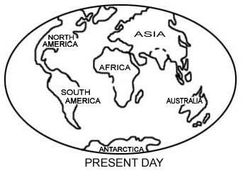
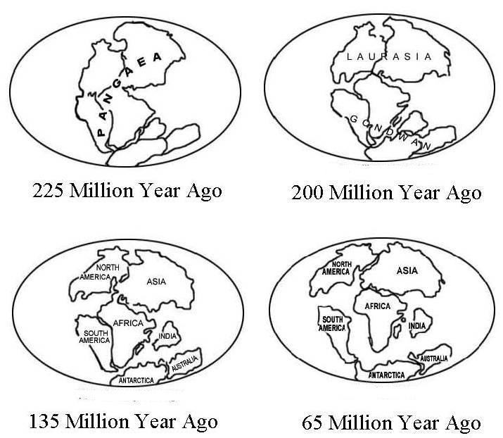
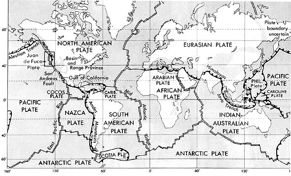
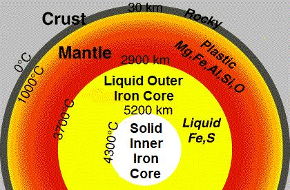

Part-2, Hudan lil Nas [Guidance for Mankind] Chapter 13 [Surah Ar-Ra'd / The Thunder] Highlight: The call of Prophet (pbuh)
পার্ট-২, হুদান লিল নাস [মানবজাতির জন্য নির্দেশনা] অধ্যায় 13 [সূরা আর-রাদ / দ্য থান্ডার] হাইলাইট: নবী (সাঃ) এর আহ্বান
The chapter calls upon people with the signs of the Creator. It depicts God's rule and specifies the Prophet's duty as solely to deliver the message. Fate is determined. The chapter emphasizes that Allah changes a disbeliever‘s fate to accept Islam if he changes his mind (qalb). It compares those who accept the Truth with those who reject it.
অধ্যায়টি সৃষ্টিকর্তার নিদর্শন দিয়ে মানুষকে আহ্বান করে। এটি ঈশ্বরের শাসনকে চিত্রিত করে এবং শুধুমাত্র বার্তা প্রদানের জন্য নবীর কর্তব্যকে নির্দিষ্ট করে। ভাগ্য নির্ধারিত হয়। অধ্যায়ে জোর দেওয়া হয়েছে যে আল্লাহ একজন কাফেরকে ইসলাম গ্রহণ করার জন্য তার ভাগ্য পরিবর্তন করেন যদি সে তার মন পরিবর্তন করে (ক্বালব)। যারা সত্যকে প্রত্যাখ্যান করে তাদের সাথে যারা সত্য গ্রহণ করে তাদের তুলনা করে।
Tafsir of the Chapter
অধ্যায়ের তাফসীর
Alif, Lam, Mim, Ra; these are the symbols of the Book, and that which has been revealed unto you from your Lord is the Truth; but most men believe not.
আলিফ, লাম, মীম, রা; এগুলো কিতাবের নিদর্শন এবং তোমার প্রতিপালকের পক্ষ থেকে তোমার প্রতি যা অবতীর্ণ হয়েছে তা সত্য। কিন্তু অধিকাংশ পুরুষ বিশ্বাস করে না।
Allah is He Who raised the Skies without immerging (bighayri amadin) that you see. Then He did istawa into the Arsh. He has subjected the sun and the moon, each one runs for a term appointed. He does regulate all affairs—explaining the signs in detail that you may believe with certainty in the meeting with your Lord.
আল্লাহই তিনি যিনি আকাশকে উত্থিত করেছেন (বিঘায়রি আমদিন) যা আপনি দেখতে পাচ্ছেন। অতঃপর তিনি আরশে ইস্তাওয়া করলেন। তিনি সূর্য ও চন্দ্রকে বশীভূত করেছেন, প্রত্যেকেই একটি নির্দিষ্ট মেয়াদের জন্য চলে। তিনি সমস্ত বিষয় নিয়ন্ত্রন করেন - নিদর্শনগুলি বিশদভাবে ব্যাখ্যা করে যাতে আপনি আপনার পালনকর্তার সাথে সাক্ষাতে নিশ্চিতভাবে বিশ্বাস করতে পারেন।
Allah created the Arsh and a vast quantity of water before He created this universe (the single-sky universe of the previous cycle). The water filled a significant portion of the Super Space. The Big Bang occurred within the water. The evolving smoke (mainly hydrogen and helium) pushed the water away. Thus, the verse says: "Allah is He Who raised the Skies without immerging (bighayri amadin)...". The smoke produced the single-sky universe of the first cycle. Allah performed istawa into the single-sky universe, thereby infusing gravitational force. As a result, the universe began contracting due to this gravitational pull, producing heavier elements, at least up to silicon. Subsequently, the universe restarted expanding from the Big Bounce, emerging as the seven-sky universe of the present cycle. Allah determined the laws of nature and the initial configuration of the universe in each cycle so that everything evolves as expected. He also regulates all affairs: "He has subjected the sun and the moon! Each one runs for a term appointed. He doth regulate all affairs..." Now, the bulk of the water falls beyond the Barzakh and has been used to create the Jannaat. A small portion of the water fell on this side of the Barzakh, which was allocated to this universe, including the Earth. The matter is deliberately discussed in Chapter-1 and in Section-4 of Chapter-21.
আল্লাহ এই মহাবিশ্ব (আগের চক্রের একক-আকাশ মহাবিশ্ব) সৃষ্টি করার আগে আরশ এবং বিপুল পরিমাণ পানি সৃষ্টি করেছেন। জল সুপার স্পেস একটি উল্লেখযোগ্য অংশ ভরাট. বিগ ব্যাংটি জলের মধ্যেই ঘটেছিল। বিবর্তিত ধোঁয়া (প্রধানত হাইড্রোজেন এবং হিলিয়াম) জলকে দূরে ঠেলে দেয়। সুতরাং, আয়াতে বলা হয়েছে: "আল্লাহ তিনিই যিনি আকাশকে উত্থিত করেছেন (বিঘায়রি আমদিন)..."। ধোঁয়া প্রথম চক্রের একক-আকাশ মহাবিশ্ব তৈরি করেছিল। আল্লাহ একক-আকাশের মহাবিশ্বে ইস্তিওয়া সঞ্চালন করেছেন, যার ফলে মহাকর্ষীয় শক্তি প্রবাহিত হয়েছে। ফলস্বরূপ, মহাবিশ্ব এই মহাকর্ষীয় টানের কারণে সংকুচিত হতে শুরু করে, অন্তত সিলিকন পর্যন্ত ভারী উপাদান তৈরি করে। পরবর্তীকালে, মহাবিশ্ব বিগ বাউন্স থেকে সম্প্রসারিত হতে পুনরায় আরম্ভ করে, বর্তমান চক্রের সাত-আকাশ মহাবিশ্ব হিসাবে আবির্ভূত হয়। আল্লাহ প্রকৃতির নিয়ম এবং প্রতিটি চক্রে মহাবিশ্বের প্রাথমিক কনফিগারেশন নির্ধারণ করেছেন যাতে সবকিছু প্রত্যাশিতভাবে বিবর্তিত হয়। তিনি সমস্ত বিষয়গুলিকেও নিয়ন্ত্রন করেন: "তিনি সূর্য ও চন্দ্রকে বশীভূত করেছেন! প্রত্যেকে একটি নির্দিষ্ট মেয়াদের জন্য চলে। তিনি সমস্ত বিষয় নিয়ন্ত্রণ করেন..." এখন, বরজাখের বাইরে জলের সিংহভাগ পড়ে এবং জান্নাত তৈরিতে ব্যবহার করা হয়েছে। জলের একটি ছোট অংশ বরজাখের এই দিকে পড়েছিল, যা পৃথিবী সহ এই মহাবিশ্বের জন্য বরাদ্দ ছিল। বিষয়টি পরিকল্পিতভাবে অধ্যায়-1 এবং অধ্যায়-21-এর ধারা-4-এ আলোচনা করা হয়েছে।
And it is He who spread out the land, and set thereon mountains standing firm, and rivers; and of the all fruits He made in it—pairs two. He draws the night as a veil over the Day. Behold, verily in these things there are signs for those who consider! Remarks:
আর তিনিই ভূমিকে বিস্তৃত করেছেন এবং তাতে স্থাপন করেছেন পর্বতমালা এবং নদীসমূহ। এবং এতে তিনি যে সমস্ত ফল তৈরি করেছিলেন তার মধ্যে দুটি - জোড়া। তিনি রাতকে দিনের উপর আবরণ হিসাবে আঁকেন। দেখ, নিঃসন্দেহে এসবের মধ্যে নিদর্শন রয়েছে চিন্তাশীলদের জন্য! মন্তব্য:
The Earth has been specially created for creatures like us, which becomes evident when we compare it to the other planets in the Solar System. Among these planets, Mars is the most similar to Earth. However, it does not appear to be a planet capable of supporting even simple microbial life. There is no water on Mars. Although it has clouds, they consist of sulfuric acid. The craters from meteor impacts are evenly distributed across Mars, indicating that the planet has not changed in the last 500 million years or so. In contrast, during this time, the Earth has undergone massive changes to become suitable for creatures like us. The Earth expels internal heat through volcanoes, but Mars lacks such a system. If the surface of Mars is thin, it radiates internal heat across the entire surface. If the surface is thick, the planet may expel internal heat through explosive eruptions at long intervals. The above verse appears to be a simple narration of nature, and in Arabic, it is expressed poetically. However, the verse carries a scientific aspect as well; it describes how the Earth has been made suitable for us. The verse is explained in the following sequence: Spread of Land Formation of Mountains Formation of Rivers Production of Flowering Trees and Fruits The sequence of the description proves that the verse is from the true Creator of the Earth: the land was spread out by continental drift, leading to the formation of high mountain ranges. This, in turn, resulted in the production of rains and rivers, which increased the level of groundwater, allowing for the evolution of large flowering trees that provide us with fruits. This transformation began approximately 250 million years ago. The verse is explained in parts below:
পৃথিবী বিশেষভাবে আমাদের মতো প্রাণীদের জন্য তৈরি করা হয়েছে, যা আমরা সৌরজগতের অন্যান্য গ্রহের সাথে তুলনা করলে স্পষ্ট হয়ে ওঠে। এই গ্রহগুলির মধ্যে, মঙ্গল পৃথিবীর সাথে সবচেয়ে বেশি মিল। যাইহোক, এটি এমন একটি গ্রহ বলে মনে হয় না যা এমনকি সাধারণ মাইক্রোবায়াল জীবনকে সমর্থন করতে সক্ষম। মঙ্গলে পানি নেই। যদিও এটিতে মেঘ আছে, তারা সালফিউরিক অ্যাসিড নিয়ে গঠিত। উল্কার প্রভাবের গর্তগুলি মঙ্গল গ্রহ জুড়ে সমানভাবে বিতরণ করা হয়েছে, যা ইঙ্গিত করে যে গ্রহটি গত 500 মিলিয়ন বছর বা তার বেশি সময়ে পরিবর্তিত হয়নি। বিপরীতে, এই সময়ের মধ্যে, পৃথিবী আমাদের মতো প্রাণীদের উপযোগী হওয়ার জন্য ব্যাপক পরিবর্তনের মধ্য দিয়ে গেছে। পৃথিবী আগ্নেয়গিরির মাধ্যমে অভ্যন্তরীণ তাপ বহিষ্কার করে, কিন্তু মঙ্গলে এমন ব্যবস্থা নেই। যদি মঙ্গল গ্রহের পৃষ্ঠটি পাতলা হয় তবে এটি সমগ্র পৃষ্ঠ জুড়ে অভ্যন্তরীণ তাপ বিকিরণ করে। যদি পৃষ্ঠটি পুরু হয় তবে গ্রহটি দীর্ঘ বিরতিতে বিস্ফোরক বিস্ফোরণের মাধ্যমে অভ্যন্তরীণ তাপকে বহিষ্কার করতে পারে। উপরের শ্লোকটি প্রকৃতির একটি সরল বর্ণনা বলে মনে হয় এবং আরবীতে এটি কাব্যিকভাবে প্রকাশ করা হয়েছে। যাইহোক, আয়াতটি একটি বৈজ্ঞানিক দিকও বহন করে; এটি বর্ণনা করে কিভাবে পৃথিবীকে আমাদের জন্য উপযোগী করা হয়েছে। শ্লোকটি নিম্নোক্ত ক্রমানুসারে ব্যাখ্যা করা হয়েছে: জমির বিস্তার পর্বত গঠন নদীর গঠন ফুলের গাছ এবং ফল উত্পাদন বর্ণনার ক্রমটি প্রমাণ করে যে আয়াতটি পৃথিবীর প্রকৃত স্রষ্টার কাছ থেকে এসেছে: ভূমি বিস্তৃত ছিল মহাদেশীয় পর্বতমালার সুউচ্চ পর্বতমালার মাধ্যমে। এর ফলস্বরূপ, বৃষ্টি এবং নদীগুলির উত্পাদন হয়েছে, যা ভূগর্ভস্থ জলের স্তরকে বাড়িয়েছে, বড় ফুলের গাছের বিবর্তনের অনুমতি দেয় যা আমাদের ফল দেয়। এই রূপান্তরটি প্রায় 250 মিলিয়ন বছর আগে শুরু হয়েছিল। আয়াতটি নীচের অংশে ব্যাখ্যা করা হয়েছে:
1. Spread of Land: ―And it is He who spread out the land…‖ [Part 1 of the Verse]
1. জমির বিস্তৃতি: "এবং তিনিই জমিকে বিস্তৃত করেছেন..." [আয়াতের ১ম পর্ব]
The continents drifted away from one another. So, the land has been spread out. One can observe the shapes of the continents on a globe, which shows that they would fit together nicely if brought closer. For example, the bulge of South America would fit neatly into the bight of Africa.
মহাদেশগুলো একে অপরের থেকে দূরে সরে গেছে। তাই, জমি ছড়িয়ে দেওয়া হয়েছে। কেউ একটি বিশ্বে মহাদেশগুলির আকারগুলি পর্যবেক্ষণ করতে পারে, যা দেখায় যে তারা কাছাকাছি আনা হলে তারা একসাথে সুন্দরভাবে ফিট হবে। উদাহরণস্বরূপ, দক্ষিণ আমেরিকার স্ফীতি আফ্রিকার বাইটের সাথে সুন্দরভাবে ফিট হবে।
FIGURE 13.4: Continents

চিত্র 13_4 / Figure 13_4
চিত্র 13.4: মহাদেশ
চিত্র 13_4 / Figure 13_4
It indicates that the continents were once joined together and later drifted apart. FIGURE 13.5: Continental Drift

চিত্র 13_5 / Figure 13_5
এটি ইঙ্গিত দেয় যে মহাদেশগুলি একবার একসাথে যুক্ত হয়েছিল এবং পরে আলাদা হয়ে গিয়েছিল। চিত্র 13.5: মহাদেশীয় প্রবাহ
চিত্র 13_5 / Figure 13_5
British Philosopher Francis Bacon noted the continental drift in 1620. Many scientists, such as Alfred Wagener, Prof Henry, Frederick J Vine, Drummond Matthews worked on the subject. Ultimately, a theory has been developed called the Theory of Plate Tectonics. The Earth's surface is divided into large tectonic plates, which are generally about 80 km thick and composed of rock. These plates move atop the soft mantle (asthenosphere), causing the continents to drift apart from one another. FIGURE 13.6: Techtronic Plates

চিত্র 13_6 / Figure 13_6
ব্রিটিশ দার্শনিক ফ্রান্সিস বেকন 1620 সালে মহাদেশীয় প্রবাহের কথা উল্লেখ করেছিলেন। অনেক বিজ্ঞানী যেমন আলফ্রেড ওয়াগেনার, অধ্যাপক হেনরি, ফ্রেডেরিক জে ভাইন, ড্রামন্ড ম্যাথিউস এই বিষয়ে কাজ করেছেন। শেষ পর্যন্ত, প্লেট টেকটোনিক্সের তত্ত্ব নামে একটি তত্ত্ব তৈরি করা হয়েছে। পৃথিবীর পৃষ্ঠটি বৃহৎ টেকটোনিক প্লেটে বিভক্ত, যা সাধারণত প্রায় 80 কিমি পুরু এবং শিলা দ্বারা গঠিত। এই প্লেটগুলি নরম ম্যান্টেলের (অ্যাস্থেনোস্ফিয়ার) উপরে চলে যায়, যার ফলে মহাদেশগুলি একে অপরের থেকে দূরে সরে যায়। চিত্র 13.6: টেকট্রনিক প্লেট
চিত্র 13_6 / Figure 13_6
The major Techtronic Plates are: Eurasian plate, Indian-Australian plate, Philippine plate, Pacific plate, Juan de Fuca plate, Nazca plate, Cocos plate, North American plates, Caribbean plate, South American plate, African plate, Arabian plate, and the Antarctic plate. The plates consist of smaller sub-plates. Continental drift has made the Earth more suitable for life. The central region of the undivided land (Pangaea) was far from the ocean, whereas the central regions of the continents are now closer to it. As a result, the overall length of coastlines has increased.
প্রধান টেকট্রনিক প্লেটগুলি হল: ইউরেশিয়ান প্লেট, ভারতীয়-অস্ট্রেলিয়ান প্লেট, ফিলিপাইন প্লেট, প্যাসিফিক প্লেট, জুয়ান ডি ফুকা প্লেট, নাজকা প্লেট, কোকোস প্লেট, উত্তর আমেরিকান প্লেট, ক্যারিবিয়ান প্লেট, দক্ষিণ আমেরিকান প্লেট, আফ্রিকান প্লেট, আরবিয়ান প্লেট এবং এন্টার্কটিক প্লেট। প্লেটগুলি ছোট সাব-প্লেট নিয়ে গঠিত। মহাদেশীয় প্রবাহ পৃথিবীকে জীবনের জন্য আরও উপযুক্ত করে তুলেছে। অবিভক্ত ভূমির কেন্দ্রীয় অঞ্চল (প্যাঙ্গিয়া) সমুদ্র থেকে অনেক দূরে ছিল, যেখানে মহাদেশগুলির কেন্দ্রীয় অঞ্চলগুলি এখন এর কাছাকাছি। ফলস্বরূপ, উপকূলরেখার সামগ্রিক দৈর্ঘ্য বৃদ্ধি পেয়েছে।
2. Formation of Mountains: ―And it is He who spread out the land, and set thereon mountains…‖ [Part 2 of the verse is underlined] In light of the verse, the spread of lands (continental drift) and the formation of high mountain ranges should be related. But how are they related? To understand this, we need to examine the interior of the Earth, which is divided into four prominent layers: Crust Mantle Outer Core Inner Core
2. পর্বত গঠন: “এবং তিনিই ভূমিকে বিস্তৃত করেছেন এবং তার উপর পর্বত স্থাপন করেছেন...” [আয়াতের ২য় খণ্ড আন্ডারলাইন করা হয়েছে] আয়াতের আলোকে, ভূমির বিস্তার (মহাদেশীয় প্রবাহ) এবং উচ্চ পর্বতশ্রেণীর গঠন সম্পর্কিত হওয়া উচিত। কিন্তু তারা কিভাবে সম্পর্কিত? এটি বোঝার জন্য, আমাদের পৃথিবীর অভ্যন্তরটি পরীক্ষা করতে হবে, যা চারটি বিশিষ্ট স্তরে বিভক্ত: ক্রাস্ট ম্যান্টল বাইরের কোর অভ্যন্তরীণ কোর
FIGURE 13.7: Earth‘s Interior

চিত্র 13_7 / Figure 13_7
চিত্র 13.7: পৃথিবীর অভ্যন্তর
চিত্র 13_7 / Figure 13_7
2a. Crust
2ক. ভূত্বক
The outermost layer of the Earth is called the Crust. The Crust is composed of a mixture of organic and inorganic compounds. Its depth ranges from 30 to 40 km on land and is approximately 10 km on the seabed.
পৃথিবীর সবচেয়ে বাইরের স্তরটিকে ভূত্বক বলা হয়। ভূত্বক জৈব এবং অজৈব যৌগের মিশ্রণে গঠিত। এর গভীরতা স্থলে 30 থেকে 40 কিমি এবং সমুদ্রতটে প্রায় 10 কিমি।